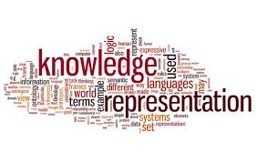

La representación del conocimiento se refiere a cómo la información está estructurada y almacenada en la memoria a largo plazo. Existen diferentes formas de organizar el conocimiento, como los modelos mentales y las redes semánticas.
Los modelos mentales representan el conocimiento conceptual que un usuario tiene sobre un sistema. Son simplificaciones cognitivas que permiten anticipar el comportamiento de un sistema basándose en experiencias previas.
Las redes semánticas organizan el conocimiento en nodos conectados por relaciones. Este tipo de representación facilita la recuperación de información mediante la propagación de la activación, lo que influye en la eficiencia de búsqueda en menús y bases de datos.
La información almacenada en la memoria a largo plazo se recupera a través de procesos de reconocimiento y recuerdo. El efecto priming demuestra cómo ciertos estímulos pueden facilitar la activación de conceptos relacionados en nuestra memoria.